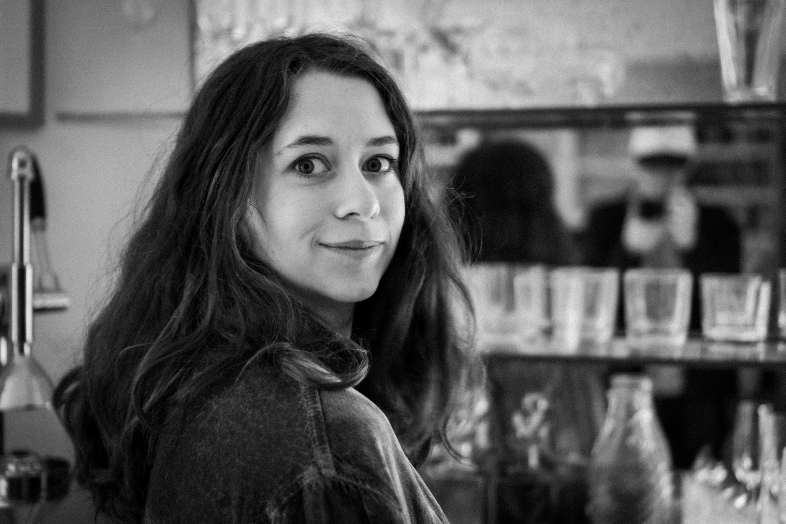

ABOUT ME
I recently earned a B.A. in Astrophysics (Physics Emphasis) from the University of Colorado Boulder. I’m excited to continue learning and hope to contribute to advancing knowledge through graduate studies and research.
I also work as an engineer at Fathom Ocean, where I help design underwater camera systems to monitor fish populations. My favorite part of the job is getting to build things and constantly learn new skills.
Between now and graduate school, you will find me doing further research with Dr. David Brain. My most recent project involved designing and developing a magnetometer. I’ll also be working and enjoying my favorite hobbies like indoor rock climbing, playing viola in the CU campus orchestra, and crafting.
I recently earned a B.A. in Astrophysics (Physics Emphasis) from the University of Colorado Boulder. I’m excited to continue learning and hope to contribute to advancing knowledge through graduate studies and research.
I also work as an engineer at Fathom Ocean, where I help design underwater camera systems to monitor fish populations. My favorite part of the job is getting to build things and constantly learn new skills.
Between now and graduate school, you will find me doing further research with Dr. David Brain. My most recent project involved designing and developing a magnetometer. I’ll also be working and enjoying my favorite hobbies like indoor rock climbing, playing viola in the CU campus orchestra, and crafting.
